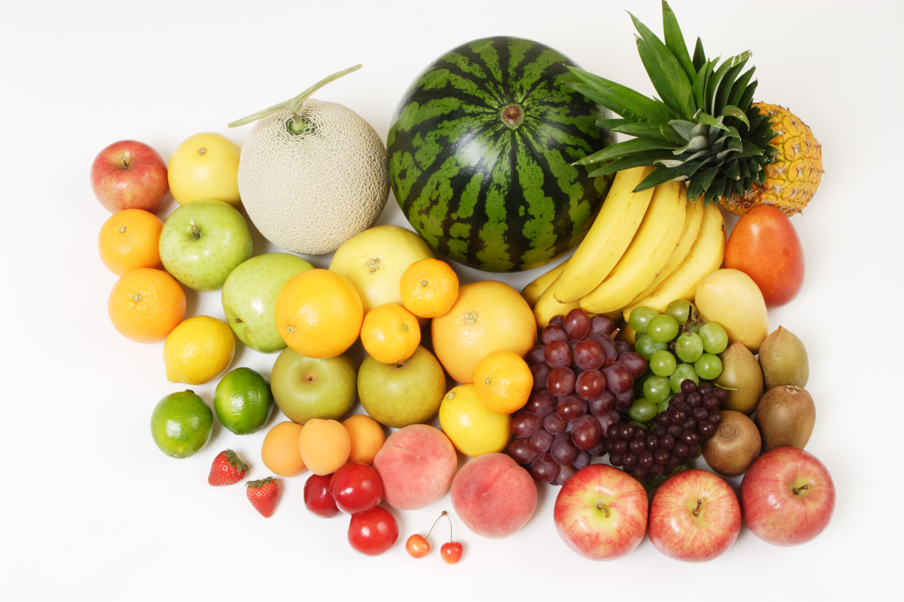

〜Home〜

こんにちは本サイトを作成した田村です
現在の日本では生きていく上で災害と隣り合わせが当たり前の生活になった
なので日本で生きるためには災害の備えが必要である
そんな災害の備えについて書いたWEBサイトがこのグルメサバイバルです
このWEBサイトの対策では災害時に電子レンジやコンロを使えない状況に陥ったとき、
どのような料理を作ることができて、どのような料理が健康面を保つことができるかを考えて作ってみました
カンパンや水で作るご飯があっても同じ食品があるわけではないので色々なレシピを記載しています
普段の生活の中でも美味しく食べれる料理なのでぜひ試してみてください！
自分も料理が苦手なので、このような美味しそうで簡単なレシピを乗っけています。
こちらの画像のものは乗っけていませんが、ラザニアと言う食べ物のです。
今回私がこのサイトのターゲットとして選んだ人は、料理のスキルが乏しい人や、若者である。
若者の中で、一人暮らしをしている方も多く、ただ焼くだけの料理をしている人が多いと考えたため、
災害時に作れるものを増やすことにチャレンジして欲しいことからこのユーザー設定を選んだ
私が今回目指したスキルアップの習得では、jsとcssを使った表示するもののアニメーションです
アニメーションの動きでは、cssで大雑把な動きを作ることができて、jsで精度の高い動きができることを学んだ
実際の成果では、cssをうまく使うことができたが、細かい動きを多く作ることができなかった